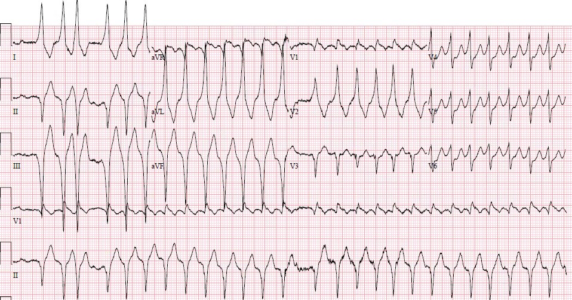
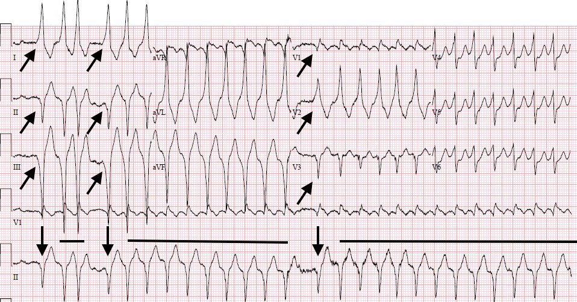
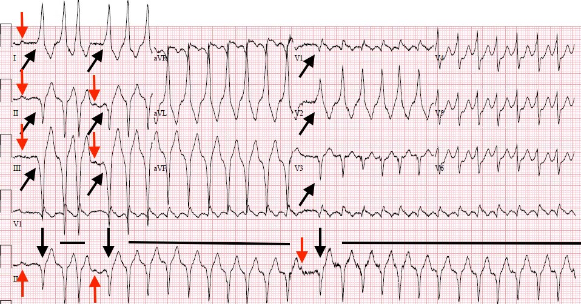
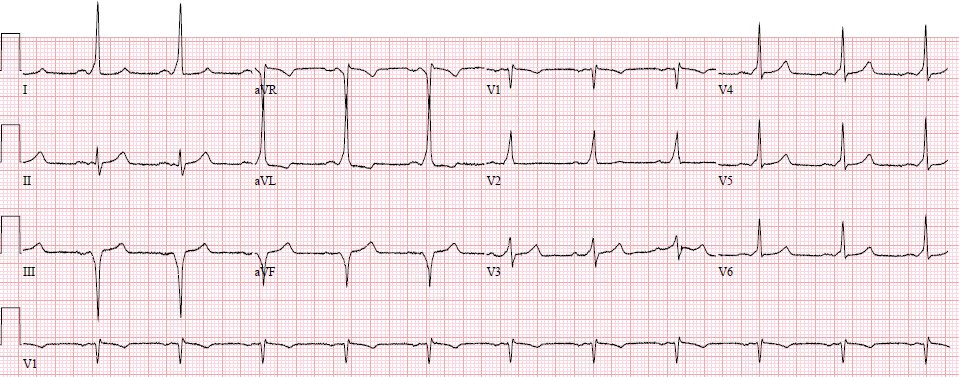
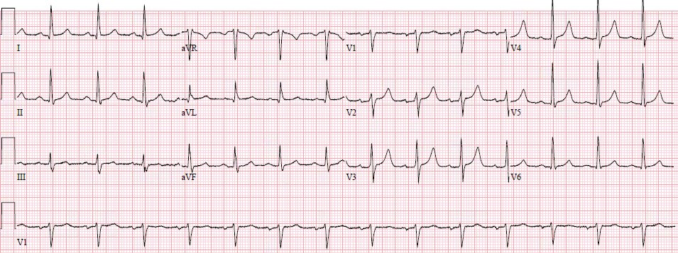

14/09/2017 — Nhịp nhanh QRS rộng: bệnh nhân ổn định hay không ổn định?
Bản dịch tiếng Việt của bài "Wide Complex Tachycardia: is the patient stable or unstable?" – Dr. Smith’s ECG Blog. Giữ nguyên toàn bộ 6 hình ảnh của bản gốc.
Đây là một ca khác do Pendell Meyers, bác sĩ nội trú G2 tại Stony Brook, viết. Như tôi đã nhắc trước đây, Pendell sẽ giúp biên tập và viết bài cho blog
Xin đặc biệt cảm ơn Dr. Atif Farooqi, người đã giải mã
ca này giúp tôi.
Ca bệnh
Một bệnh nhân nam ngoài 50 tuổi, có tiền sử “SVT với
hai lần triệt đốt thất bại trước đây”, đến khám vì hồi hộp đánh trống ngực và
khó thở khởi phát cấp. Bệnh nhân trông hơi khó thở và vã mồ hôi, nhưng
hoàn toàn tỉnh táo, nhận thức tốt, còn cười kể mình đã nhiều lần rơi vào đúng
tình huống này. Huyết áp đo tự động ban đầu là 83/51, đo tay ngay sau đó là
98/58.
Trước khi xem tới điện tâm đồ, bệnh nhân này
“ổn định” hay “không ổn định”? Điều này dĩ nhiên phụ thuộc vào
định nghĩa của bạn, kinh nghiệm trước đây và nhiều yếu tố khác. Nếu bạn quan tâm tới cách
các hướng dẫn ACLS định nghĩa “ổn định so với không ổn định”, thì hãy chuẩn bị tinh thần
đón nhận những mô tả khó hiểu và mâu thuẫn.
ACLS định nghĩa không ổn định là “tình trạng trong đó
chức năng cơ quan sống còn bị suy giảm cấp tính hoặc ngừng tim đang diễn ra hay
sắp xảy ra.” (1)
Vấn đề #1: Suy giảm cấp tính chức năng cơ quan sống còn làmột mức độ không ổn định hoàn toàn khác so với ngừng tim sắp xảy ra hoặcđang diễn ra.
Một cơn hen phế quản có thể được xem là
suy giảm cấp tính chức năng của một cơ quan sống còn, nhưng rõ ràng không hàm ý
ngừng tim sắp xảy ra.
Sau đó họ đưa ra một danh sách các tiêu chí gợi ý
thỏa mãn tình trạng đó, bao gồm các thuật ngữ như “khó chịu ngực do thiếu máu
cục bộ” và “suy tim cấp.” (1)
Vấn đề #2: Các thuật ngữ này có độ biến thiên giữa những người đánh giá cao
Trừ khi đó là dạng hiếm gặp và rõ ràng
của cơn đau ngực dữ dội như bị đè nghiến ở một bệnh nhân rõ ràng đang bệnh nặng, vã mồ hôi tới mức điện cực không dính được, thì làm sao chúng ta thống nhất
được loại triệu chứng ngực nào là “khó chịu ngực do thiếu máu cục bộ”?
Phần lớn bệnh nhân đều có cảm giác nào đó ở ngực khi tim đập
nhanh. Một số người khẳng định đó không phải là đau, mà là
“đè nặng,” “khó chịu,” “đập thình thịch,”
“bó chặt,” hay “rung rinh.” Khi ACLS cảnh báo về những bệnh nhân bị đau ngực “do thiếu máu cục bộ” trong số tất cả những người có bất kỳ triệu chứng ngực nào, dường như người ta được yêu cầu phải giả định điều tồi tệ nhất, rằng cảm giác khó chịu ở ngực của bệnh nhân thực sự là do thiếu máu cục bộ. Sự
mơ hồ tương tự cũng tồn tại về việc thế nào là “suy tim cấp” trong
bối cảnh nhịp nhanh.
Do đó, cách phân đôi của ACLS vừa khó hiểu vừa
quá đơn giản hóa. Nó không tính tới phổ biến thiên gặp trong
thực hành thực tế, và không giúp bác sĩ lâm sàng hiểu khi nào nên dùng sốc điện thay vì các can thiệp ít quyết liệt hơn cho một rối loạn nhịp nhanh. Sốc điện chuyển nhịp ngay lập tức là cần thiết khi có nguy cơ xấu đi sắp xảy ra.
Các tiêu chí được đề xuất thỏa mãn định nghĩa thu hẹp này về
không ổn định là:
- Rối loạn ý thức
cấp tính hoặc lơ mơ - Dấu hiệu sốc rõ ràng
- Suy tim
cấp gây phù phổi và suy hô hấp nặng mà
nếu không thì sẽ cần thông khí áp lực dương không xâm nhập hoặc xâm nhập - VT đa dạng
bền bỉ
Các tiêu chí 1-3 hàm ý nguy cơ tức thì tổn hại
đường thở, giảm tưới máu nguy kịch và/hoặc giảm oxy máu nguy kịch. Ngoài ra,
các can thiệp vốn là hàng đầu như nghiệm pháp cường phế vị hay adenosine trong
những trường hợp này là không khả thi và/hoặc nguy hiểm, vì nhịp chậm hoặc
hạ huyết áp thoáng qua do các điều trị này gây ra có thể không được dung nạp trong tình trạng
huyết động vốn đã mong manh. Trong bối cảnh PMVT bền bỉ, bản thân nhịp này mang
nguy cơ nội tại xấu đi tức thì và ngừng tim, ngay cả khi tạm thời chưa có các tiêu chí khác ở trên. VT đa dạng là một
dạng có tổ chức hơn một chút của rung thất (VFib) và được điều trị giống hệt, bằng khử rung không đồng bộ.
Một bệnh nhân người lớn thực sự không ổn định, mà tình trạng không ổn định
được cho là do rối loạn nhịp nhanh (không phải PMVT), cần được
sốc điện chuyển nhịp đồng bộ ngay với 150-200 J dưới an thần thủ thuật.
An thần là không cần thiết và nguy hiểm nếu bệnh nhân đã lơ mơ. Phải kiểm tra
màn hình theo dõi trước mỗi lần sốc điện chuyển nhịp đồng bộ để bảo đảm
máy không đồng bộ vào sóng T, nhằm tránh hiện tượng R trên T (R-on-T) và
nhịp xấu đi.
Quay lại ca bệnh:
Đây là điện tâm đồ lúc nhập viện của bệnh nhân:


Bước đầu tiên trong diễn giải và xử trí
rối loạn nhịp nhanh là phân loại nó theo hai câu hỏi:
1) Hẹp hay Rộng
2) Đều hay không đều
Cách này cho ra một danh sách chẩn đoán phân biệt giới hạn cho mỗi nhóm. Quan trọng
hơn, nó mang lại ngay một chiến lược xử trí theo kinh nghiệm vừa
an toàn vừa hiệu quả, ngay cả khi chưa biết chẩn đoán nhịp cụ thể trong
nhóm đó:

Nhịp không đều có thể được chia nhỏ hơn thành “không đều một cách đều đặn” hoặc “không đều hoàn toàn”. Không đều hoàn toàn là hoàn toàn hỗn loạn và không thể đoán trước, chủ yếu gặp trong rung nhĩ, nhưng cũng gặp trong MAT và VT đa dạng. Không đều một cách đều đặn gặp trong loạn nhịp xoang, nhịp xoang kèm blốc AV thay đổi, PAC, PVC và cuồng nhĩ kèm blốc thay đổi.
Vậy bạn làm gì khi không chắc nhịp là không đều một cách đều đặn hay không đều hoàn toàn?
Đừng bỏ sót một nhịp QRS rộng thực sự không đều hoàn toàn, vì nguy cơ có hại
của bất kỳ thuốc ức chế nút AV nào trong bối cảnh AF tiền kích thích.
Do đó, nếu còn nghi ngờ, bác sĩ lâm sàng nên giả định đây là một nhịp không đều
hoàn toàn và xử trí tương ứng. Với điều kiện đó, các phức bộ QRS không đều
một cách đều đặn thường biểu hiện
1) Một nhịp đều duy nhất kèm blốc AV cố định hoặc
thay đổi
Ví dụ: cuồng nhĩ kèm blốc thay đổi, nhịp nhanh xoang kèm LBBB và RBBB liên quan tần số, v.v.
2) Một nhịp đều duy nhất kèm các nhát đến sớm thường xuyên
Ví dụ: nhịp xoang kèm PAC thường xuyên, nhịp nhanh xoang kèm LBBB và PVC thường xuyên, v.v.
3) Hai hoặc nhiều nhịp riêng biệt và cạnh
tranh nhau
Ví dụ: nhịp xoang xen các loạt VT hoặc SVT, v.v.
Điện tâm đồ
này cho thấy một nhịp nhanh QRS rộng nhìn chung không đều và có các phức bộ QRS
với hình thái khác nhau. Vì vậy, điều cần cân nhắc đầu tiên phải là
rung nhĩ kèm WPW (AF tiền kích thích), và đó cũng là ấn tượng đầu tiên của tôi.
Nhưng có những đoạn nhịp QRS rộng đơn dạng đều trong
bản ghi. AF không bao giờ có thể đều, nên đây không thể là AF kèm WPW. Vì vậy bạn phải
chia điện tâm đồ thành từng đoạn để hiểu điều gì đang diễn ra. Đây là
điện tâm đồ đã được chú thích:


Các mũi tên đen chỉ một phức bộ QRS có hình thái riêng biệt, xuất hiện mỗi lần trước một loạt nhịp nhanh QRS rộng
đều với các phức bộ QRS khác hình thái nhưng cũng đơn dạng (biểu thị bằng các
đoạn thẳng màu đen).
Chẩn đoán phân biệt cho các loạt nhịp nhanh
QRS rộng đơn dạng đều dĩ nhiên là: VT, SVT kèm bất thường
dẫn truyền, tất cả đều có hoặc không kèm tăng kali máu.
Không có đặc điểm nào đặc biệt đáng lo ngại về tăng kali máu. Cũng không có đặc điểm nào gợi ý
VT rõ ràng, chẳng hạn QRS đồng hướng ở chuyển đạo trước tim. Nếu bạn nghĩ rằng các phức bộ QRS riêng biệt
kia có thể là nhát hỗn hợp hoặc nhát bắt được, thì lẽ ra đã không
có chỗ ngắt nhịp ngay trước chúng. Nhát hỗn hợp/nhát bắt được được
mô tả khi một nhịp hiện diện liên tục trước, trong và sau
nhát đang xét. Thay vào đó, nhịp này liên tục khởi phát, kết thúc rồi tái xuất hiện. Điều này khiến các thuốc tác dụng ngắn như adenosine trở nên vô dụng, vì nhịp nhiều khả năng sẽ tái lập ngay sau khi tác dụng của adenosine hết.
Hãy xem kỹ hơn:


Không có cách nào loại trừ VT dựa trên điện tâm đồ này,
nhưng sự hiện diện của các phức bộ QRS đơn lẻ có thể có sóng delta đi trước
nhịp nhanh đều làm tăng nghi ngờ một nhịp vào lại đều sử dụng
đường phụ (bypass tract), chẳng hạn nhịp nhanh vào lại nhĩ thất (AVRT, xem bên dưới). Các nhát được chỉ bằng mũi tên đen khởi phát AVRT, sau đó nó tiếp diễn cho tới khi có điều gì đó (có thể là hoạt động nhĩ được chỉ bằng mũi tên đỏ) cắt đứt nó, rồi nó lại bắt đầu lần nữa.
Ôn lại về AVRT:
(“Vào lại vòng lớn” (macroreentrant) là một vòng lớn như trong cuồng nhĩ, còn “vào lại vòng nhỏ” (microreentrant) là một vòng rất nhỏ như gặp trong vào lại trong nút, khi toàn bộ vòng nằm gọn trong nút AV)
Nhịp nhanh vào lại nhĩ thất (AVRT) là một
nhịp vào lại vòng lớn liên quan tới tâm nhĩ và tâm thất, đòi hỏi
một đường phụ nhĩ thất bất thường (còn gọi là “đường phụ
(bypass tract),” “bó Kent”) bên cạnh nút AV.
Đường phụ có thể dẫn truyền xuôi dòng (từ nhĩ xuống
thất), ngược dòng (từ thất lên nhĩ), hoặc cả hai, và các
đặc tính này cũng có thể thoáng qua và dao động tùy theo nhiều
điều kiện.
Trong nhịp xoang, điện thế hoạt động (AP) khởi phát tại nút SA
và đi vào nút AV cùng đường phụ đồng thời (song
song). Trong khi nút AV bình thường dẫn truyền chậm (tạo ra khoảng
trễ giữa sóng P và QRS), đường phụ thì không, và quá trình khử cực
qua đường phụ bắt đầu trước (“tiền kích thích”). Vì đường phụ
không nối trực tiếp với hệ dẫn truyền chuyên biệt, xung
động lan chậm qua cơ tim. Do dẫn truyền chậm tạo ra một
phức bộ QRS rộng, kết quả là một sóng lệch ban đầu rộng được gọi là sóng “delta”.
Khi AP từ nút AV truyền xuống qua hệ
dẫn truyền, nó nhanh chóng hội tụ với AP từ đường phụ. Điều này biểu hiện
thành một nhát hỗn hợp với phần đầu của QRS bất thường (sóng delta) và
phần sau trông bình thường hơn.
Một nhát co bóp sớm đến đúng thời điểm có thể
gặp một đường đang trong thời kỳ trơ trong khi đường kia có thể tiếp nhận xung
động sớm này. Đến khi AP tới được đường còn lại, đường đó đã
tái cực hoàn toàn và có thể tiếp tục vòng dẫn truyền nối tiếp. Vòng vào lại lớn
có thể diễn ra theo kiểu xuôi chiều (xuôi dòng xuống nút AV và ngược dòng
lên đường phụ) hoặc ngược chiều (theo hướng ngược lại). AVRT xuôi chiều
hoạt hóa tâm thất qua hệ dẫn truyền nội tại, tạo ra
hình thái QRS giống hệt với QRS nền của bệnh nhân (trừ khi có BBB liên quan tần số).
AVRT ngược chiều liên quan tới sự lan truyền dẫn truyền qua
cơ tim mà không dùng hệ dẫn truyền nội tại, tạo ra một WCT
thường không thể phân biệt được với VT.
Xem sơ đồ này để hiểu các dạng sóng
do sự hiện diện của đường phụ tạo ra:
https://ecgwaves.com/wp-content/uploads/2016/08/AVRT-1.jpg (sơ đồ minh họa AVRT)
Khi AVRT tạo ra một nhịp QRS hẹp, hẳn nó đã
đi vào hệ dẫn truyền nội tại theo chiều xuôi dòng (thường qua nút AV),
và được gọi là AVRT xuôi chiều. Khi phức bộ QRS rộng như trong
ca này, thì đó hoặc là AVRT ngược chiều (đi vào tâm thất qua
đường phụ), hoặc là AVRT xuôi chiều kèm bất thường dẫn truyền dù có sử dụng
hệ dẫn truyền (các BBB, IVCD không đặc hiệu, tăng kali máu, chẹn kênh Na).
Ca bệnh tiếp diễn
Không có điện tâm đồ cũ, và không có hồ sơ bệnh án
cũ nào được lưu. Nhân viên cấp cứu ngoài viện báo rằng họ đã thử adenosine 6 và 12 mg
trên đường vận chuyển nhưng không thấy nhịp thay đổi. Bệnh nhân được cho là
có triệu chứng do nhịp này, và có các dấu hiệu sinh tồn cùng đặc điểm khám
thực thể đáng lo ngại, nhưng vào thời điểm đó các bác sĩ điều trị thấy rõ rằng bệnh nhân
không có nguy cơ ngừng tim sắp xảy ra.
Lúc đó nhịp được cho là một
nhịp QRS rộng không đều hoàn toàn, vì các kiểu hình ở trên chưa
được nhận ra.
Truyền amiodarone được chỉ định. (Nếu bệnh nhân của bạn thực sự bị AF kèm WPW, điều này có thể nguy hiểm! Giống như adenosine, amiodarone có thể không an toàn trong AF kèm WPW. Tác dụng chẹn beta của nó có thể khiến nhịp xấu đi, và do đó nó bị chống chỉ định trong các hướng dẫn ACLS và SVT đối với bất kỳ nhịp nhanh QRS rộng không đều hoặc đa dạng nào). (1,2)
45 phút sau khi bắt đầu truyền, bệnh nhân
tụt huyết áp ngày càng nặng (~80/40) và kém tỉnh táo hơn dù nhịp không
thay đổi. Bệnh nhân được an thần và sốc điện chuyển nhịp, ngay lập tức
cho ra điện tâm đồ này:


Ý thức và các dấu hiệu sinh tồn của bệnh nhân nhanh chóng
trở về bình thường, và nhịp không tái phát. Thông thường, sốc điện chuyển nhịp hay các thuốc
tác dụng ngắn sẽ không giải quyết được vấn đề này vì nhịp tái diễn
lẽ ra sẽ tái phát ngay sau điều trị (đây là lý do các thuốc tác dụng
dài hơn được chỉ định trong tình huống này). Amiodarone tác động qua nhiều cơ chế, và có thể đã ngăn sự khởi phát AVRT bằng cách ngăn các PAC hoặc PVC (được đánh dấu bằng mũi tên đỏ ở trên). Khoa tim mạch được mời hội chẩn, và bệnh nhân được nhập viện để làm
thăm dò điện sinh lý (EP).
Đây là báo cáo của thăm dò điện sinh lý [người dịch: nguyên văn ghi “ED study”, nhiều khả năng là lỗi đánh máy của “EP study”]:
“Bệnh nhân đến phòng thăm dò trong tình trạng NSR,
AVRT ngược chiều được gây ra khi thao tác ống thông, rồi thoái biến thành
AF cần sốc điện chuyển nhịp nhiều lần. Bệnh nhân không bao giờ duy trì AVRT đủ lâu
để có thể thực hiện đầy đủ các thao tác chẩn đoán. Không có dẫn truyền ngược dòng qua
đường phụ. Lập bản đồ vị trí hoạt hóa xuôi dòng sớm nhất được thực hiện trong khi
tạo nhịp nhĩ, vùng sau-vách bên phải có một số vị trí sớm nhưng triệt đốt
không thành công. Lập bản đồ vòng van hai lá phát hiện một vị trí sớm làm
mất tiền kích thích khi va chạm ống thông (bumping); khi tiền kích thích quay lại, triệt đốt tại
vị trí này đã làm mất vĩnh viễn tiền kích thích ở giây thứ 1,4 của
tổn thương triệt đốt đầu tiên.”
Như vậy, bệnh nhân rõ ràng đã được triệt đốt thành công
một đường phụ sau-vách bên trái.
Đây là điện tâm đồ của bệnh nhân sau thủ thuật:


Bệnh nhân không còn hồi hộp đánh trống ngực và rối loạn nhịp
trong hơn 1 năm.
Những điểm cần học:
- Ổn định
hay không ổn định chưa được định nghĩa rõ trong các hướng dẫn ACLS hiện hành, nhưng
bác sĩ lâm sàng cần nhận ra được các dấu hiệu sắp xấu đi và
thay đổi cách xử trí tương ứng - Khi một
nhịp QRS rộng không đều hoàn hảo nhưng cũng không không đều
hoàn toàn, nên cân nhắc blốc AV, các nhát đến sớm, hoặc nhiều
nhịp cạnh tranh/luân phiên nhau, đồng thời ghi nhớ nguy cơ bỏ sót một
nhịp nhanh QRS rộng không đều hoàn toàn - AVRT
ngược chiều là một tình trạng hiếm gặp gây nhịp nhanh QRS rộng đơn dạng đều,
có thể không phân biệt được với VT hoặc các rối loạn nhịp kèm
tăng kali máu